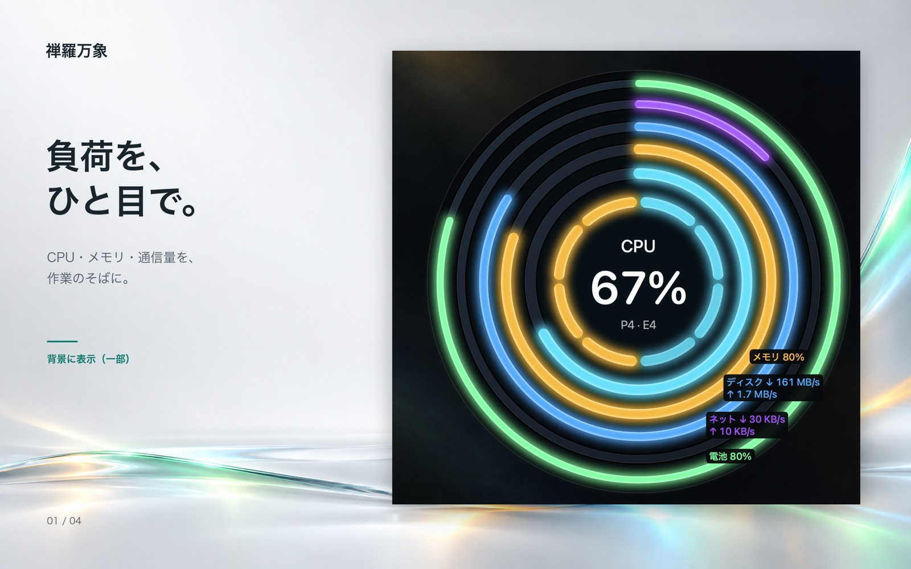
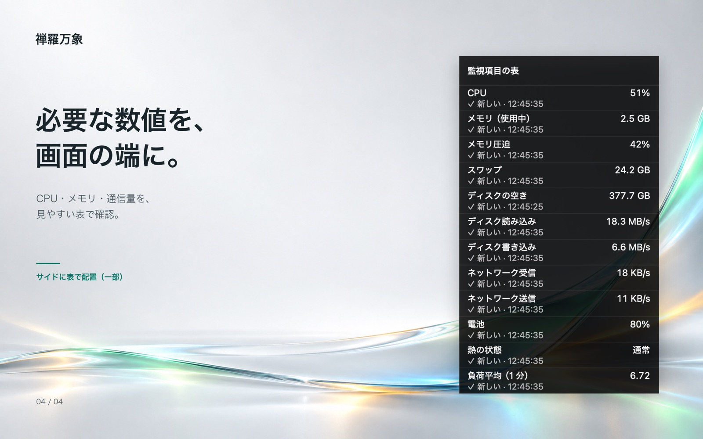
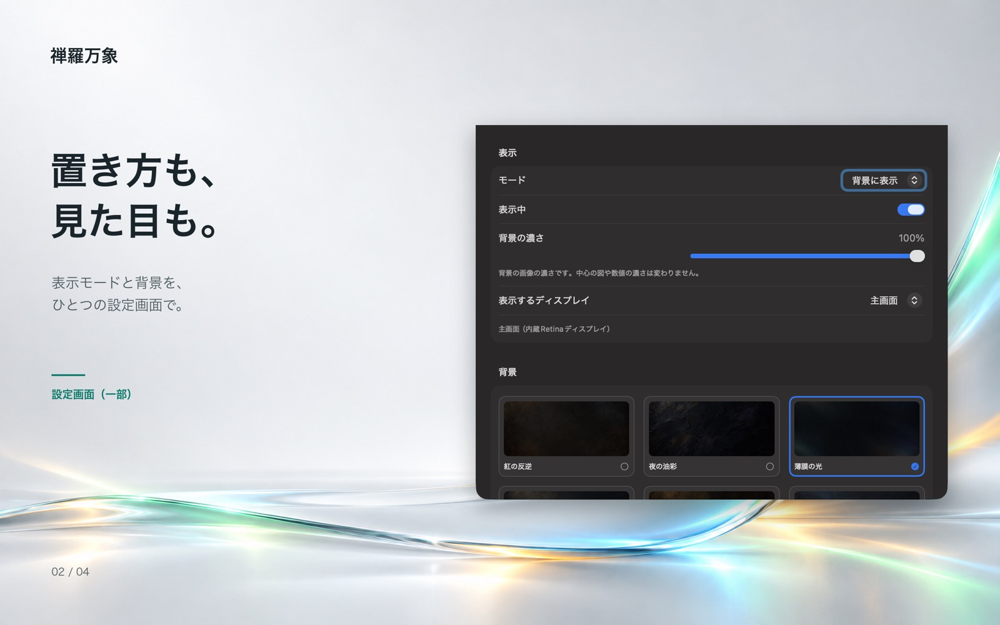
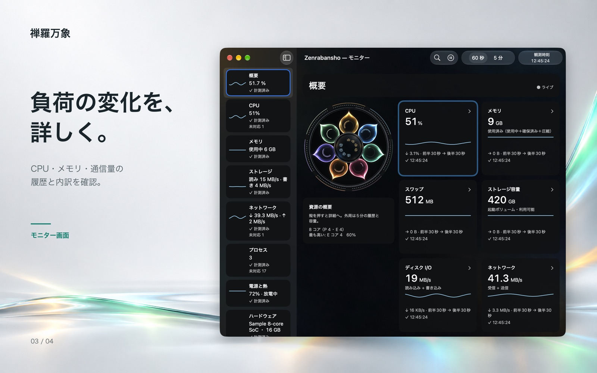

Zenrabansho — System Monitor for Mac
一 · 観 — AT A GLANCE
禅羅万象は、CPU・メモリ・ストレージ・ネットワーク・プロセス・電源の状態を、作業のそばで確かめるためのシステムモニターです。 デスクトップの背景、作業中の画面の手前、画面の端の表から、作業に合う置き方を選べます。 Zenrabansho is a system monitor for checking CPU, memory, storage, network traffic, processes and power while you work — on your desktop, above your work, or in a table at the edge of the screen.

二 · 置 — THREE DISPLAY MODES
デスクトップの背景として、数値と中心の図を表示します。Show in Background — readings and a center graphic as your desktop background.
作業中の画面の手前に、薄く重ねて表示します。クリックは下の窓へ通るので、そのまま作業を続けられます。Show in Front — a faint display above your work. Clicks pass through to the windows below.
画面の左か右に数値の表を置きます。ほかのアプリの窓の端に重ねて表示します。Arrange as Side Table — a table of readings at the left or right edge of the screen.
ショートカット（初期設定は ⌃⌥⌘M）で、表示と非表示を切り替えられます。手前に表示はスクリーンショットや画面共有に写るので、共有の前にショートカットで隠してください。 Press the shortcut (⌃⌥⌘M by default) to show or hide the display. Show in Front appears in screenshots and screen sharing, so hide it before you share your screen.

三 · 整 — SETTINGS
メニューバーのアイコンをクリックすると、設定画面が開きます。表示モード、背景、中心の見せ方、濃さ、表示するディスプレイ、サイドの表の項目と順番、ショートカットをまとめて変えられ、試し見で仕上がりを確かめられます。 Click the menu bar icon to open Settings. Change the display mode, background, center graphic, opacity, display, side table rows and order, and shortcut in one place, and check the result in the live preview.
背景は 6 つの絵（紅の反逆・夜の油彩・薄膜の光・環の惑星・墨の円相・切り紙の断層）、自分の画像（最大 20 枚）、なしから選べます。中心の図は「コア」と「曼荼羅」から選べます。 Choose one of six backgrounds, up to 20 of your own images, or none, and pick Core or Mandala as the center graphic.

四 · 知 — MONITOR & GUIDE
メニューバーのアイコンを右クリックして「モニターを開く」を選ぶと、概要・CPU・メモリ・ストレージ・ネットワーク・プロセス・電源と熱・ハードウェア・診断と権限・全項目を、履歴や内訳と一緒に確かめられます。取得できない値は 0 と表示せず、理由を示します。 Right-click the menu bar icon and choose Open Monitor to see history and breakdowns for Overview, CPU, Memory, Storage, Network, Processes, Power & Thermal, Hardware, Diagnostics & Permissions, and All Metrics. Readings that can't be measured are never shown as zero.
各項目の「解説」とメニューの「ヘルプ」は、ブラウザでこのサイトの解説を開きます。項目の意味、単位、計り方、値が高い・低いときに考えられることと、自分でできる対処を、日本語と英語で載せています。 Each metric's Learn More and the Help menu open the metric guide on this website. It explains what each metric means, its unit, how it is measured, what high or low values may indicate, and what you can do — in Japanese and English.

取得できる項目は、Mac の機種・macOS の版・権限によって異なります。部位ごとの温度やファンの回転数は表示しません。 Available readings depend on your Mac, macOS version and permissions. Per-component temperatures and fan speeds are not shown.
五 · 無 — THREE ZEROS
The app collects no data
The app sends nothing off your Mac
Zero notifications
アプリ自身による外部通信・データ収集はありません。監視データは Mac の中だけで扱います。お賽銭（アプリ内課金）の決済はAppleのApp Storeが処理し、開発者は個人データを受け取りません。なお、このサイトでは、ページの閲覧と App Store へのリンクのクリックを Google Analytics 4 で計測しています。 The app itself makes no network connections and collects no data. Monitoring data stays on your Mac. Optional tips are processed by Apple's App Store; the developer receives no personal data. This website, not the app, measures page views and App Store link clicks with Google Analytics 4.
六 · 縁 — SUPPORT
Free for everyone — supported by optional tips.
禅羅万象は無料です。アプリは広告を載せず、データも集めません。制作は、使い続けてくださる方の『お気持ち』に支えられています。 Zenrabansho is free. The app has no ads and collects no data — development is sustained by optional tips from people who enjoy it.
アプリ内の賽銭箱から。メニューバーのアイコンを右クリック→『お賽銭箱…』。決済はAppleが処理します。In-app Tip Jar — right-click the menu bar icon → 'Tip Jar…'. Processed by Apple.
いずれも開発者個人への応援です。寺社・慈善団体など第三者への寄付ではありません。 Tips support an individual developer — not a donation to any temple, shrine, or charity.
無料 / Free — 広告なし・サブスクリプションなし · no ads · no subscription